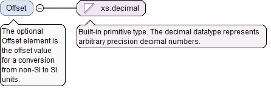

<xs:element name="Factor" type="PositiveDecimalType"><xs:annotation><xs:documentation>The Factor element is the multiplicative factor for a conversion from non-SI to SI units.</xs:documentation></xs:annotation></xs:element>
The optional Offset element is the offset value for a conversion from non-SI to SI units.
Diagram

Type
xs:decimal
Properties
content
simple
minOccurs
0
default
0
Source
<xs:element name="Offset" type="xs:decimal" default="0" minOccurs="0"><xs:annotation><xs:documentation>The optional Offset element is the offset value for a conversion from non-SI to SI units.</xs:documentation></xs:annotation></xs:element>
The UnitConversionType defines the parameters for a conversion from non-SI units to SI units. To convert a non-SI unit value X to an SI unit S, use the equation: S = ((X plus Offset) times Factor).
Angle conversion to radians degree Factor=0.017453293 Offset=0Area conversion to square meters square inch Factor=0.00064516 Offset=0 square foot Factor=0.09290304 Offset=0 square millimeter Factor=0.000001 Offset=0Force conversion to newtons kilogram Factor=9.80665 Offset=0 ounce Factor=0.2780139 Offset=0 pound Factor=4.448222 Offset=0Length conversion to meters foot Factor=0.3048 Offset=0 inch Factor=0.0254 Offset=0 millimeter Factor=0.001 Offset=0Mass conversion to kilograms gram Factor=0.001 Offset=0 ounce Factor=0.02834952 Offset=0 pound Factor=0.4535924 Offset=0Pressure conversion to pascals kilopascal Factor=1000.0 Offset=0 psi Factor=6894.757 Offset=0Speed conversion to meters per second feetPerSecond Factor=0.3048 Offset=0 inchesPerSecond Factor=0.0254 Offset=0 mmPerSecond Factor=0.001 Offset=0Temperature Conversion to kelvin Fahrenheit Factor=0.555555556 Offset=459.67 Celsius Factor=1.0 Offset=273.15 Rankine Factor=0.555555556 Offset=0Time conversion to seconds hour Factor=3600.0 Offset=0 minute Factor= 60.0 Offset=0
<xs:complexType name="UnitConversionType"><xs:annotation><xs:documentation>The UnitConversionType defines the parameters for a conversion from non-SI units to SI units. To convert a non-SI unit value X to an SI unit S, use the equation: S = ((X plus Offset) times Factor).</xs:documentation><xs:documentation>Angle conversion to radians degree Factor=0.017453293 Offset=0 Area conversion to square meters square inch Factor=0.00064516 Offset=0 square foot Factor=0.09290304 Offset=0 square millimeter Factor=0.000001 Offset=0 Force conversion to newtons kilogram Factor=9.80665 Offset=0 ounce Factor=0.2780139 Offset=0 pound Factor=4.448222 Offset=0 Length conversion to meters foot Factor=0.3048 Offset=0 inch Factor=0.0254 Offset=0 millimeter Factor=0.001 Offset=0 Mass conversion to kilograms gram Factor=0.001 Offset=0 ounce Factor=0.02834952 Offset=0 pound Factor=0.4535924 Offset=0 Pressure conversion to pascals kilopascal Factor=1000.0 Offset=0 psi Factor=6894.757 Offset=0 Speed conversion to meters per second feetPerSecond Factor=0.3048 Offset=0 inchesPerSecond Factor=0.0254 Offset=0 mmPerSecond Factor=0.001 Offset=0 Temperature Conversion to kelvin Fahrenheit Factor=0.555555556 Offset=459.67 Celsius Factor=1.0 Offset=273.15 Rankine Factor=0.555555556 Offset=0 Time conversion to seconds hour Factor=3600.0 Offset=0 minute Factor= 60.0 Offset=0</xs:documentation></xs:annotation><xs:sequence><xs:element name="Factor" type="PositiveDecimalType"><xs:annotation><xs:documentation>The Factor element is the multiplicative factor for a conversion from non-SI to SI units.</xs:documentation></xs:annotation></xs:element><xs:element name="Offset" type="xs:decimal" default="0" minOccurs="0"><xs:annotation><xs:documentation>The optional Offset element is the offset value for a conversion from non-SI to SI units.</xs:documentation></xs:annotation></xs:element></xs:sequence></xs:complexType>